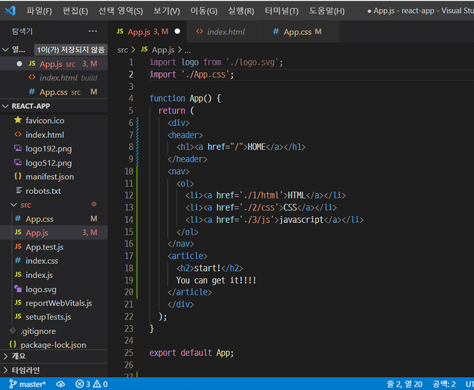
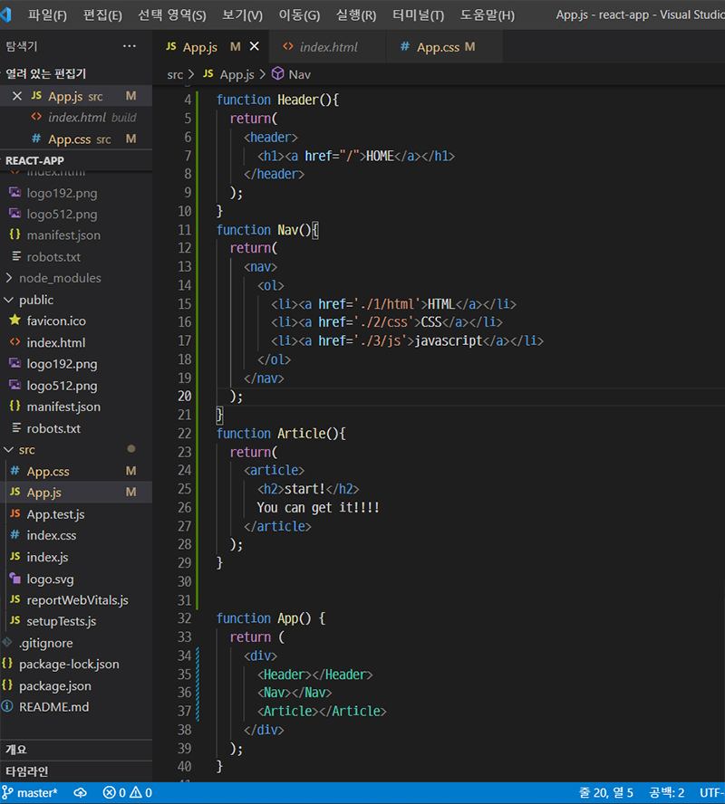
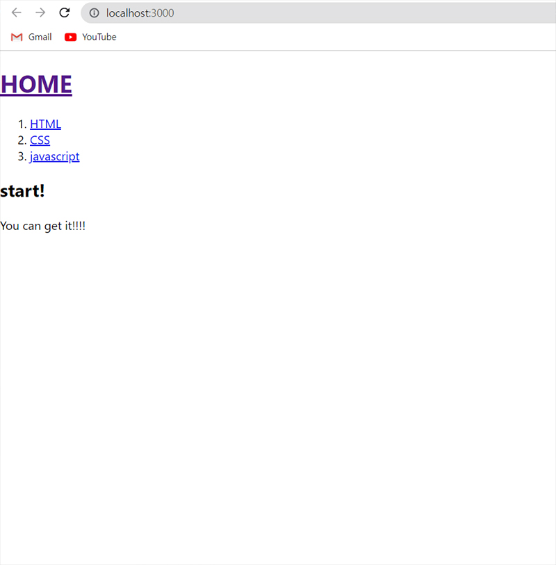

사용자 정의 태그
2022-04-16
리액트는 사용자 정의 태그를 만드는 기술이다. 쉽게 말해 복잡하고 반복되는 태그를 사용자가 지정한 방식의 새로운 태그로 만들어 사용하게 하는 것이다.
그런데, 어떻게?
함수를 정의해서 만든다.
-
예를 들어, 평범한 HTML을 작성하는 경우 아래와 같은 방식을 사용한다.
- 
- src 폴더의 App.js로 작성한 화면. header와 main, footer로 구성된 HTML의 코드 작성을 따랐다.
여기서, react를 이용하여 함수를 정의하여 작성해 보자.
- 
- 함수를 정의할 때는 첫 글자를 꼭 대문자로 작성하여야 한다. (아마도 이것 때문에 프로젝트명에는 대문자를 사용할수 없었던 것 같다...)
- 이러한 사용자 정의 태그를 리액트에서는 컴포넌트(component)라고 부른다.
- 사족을 달자면, 기존에 켜진 개발 환경에서 나가려면 터미널에서 ctrl키와 c를 누르면 된다.
-
- 
- 완성된 화면